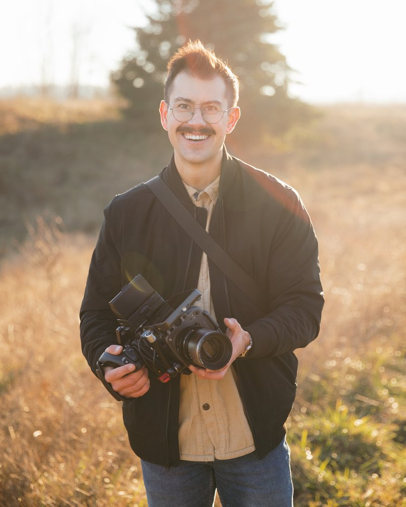
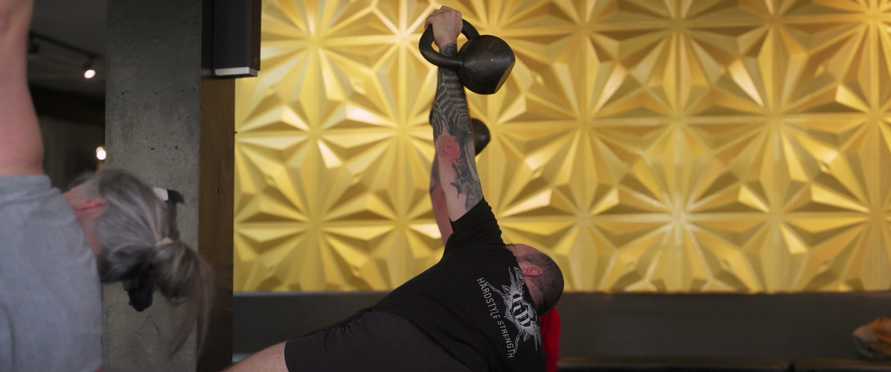
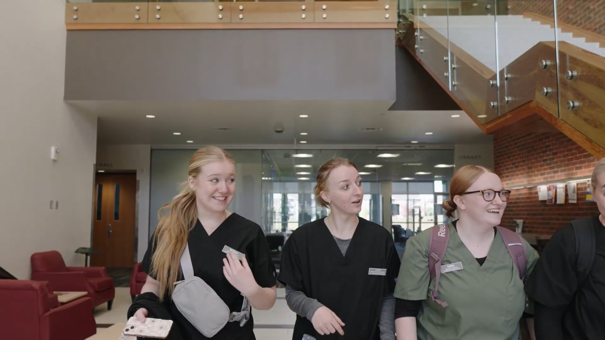
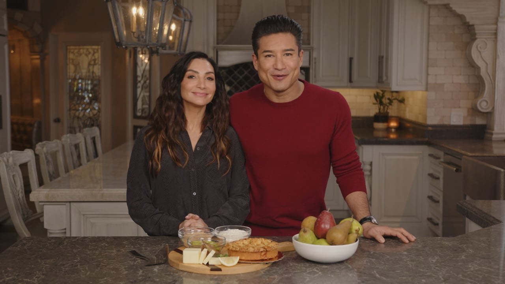
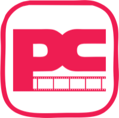

Press
Everything you need to write about Portland Content is on this page. If you're looking for something that isn't here, write to hello@portlandcontent.com.
About Portland Content
One line
Portland Content keeps your channels full of work you're proud of.
About 50 words
Portland Content is a content agency in Portland, Oregon, founded in 2021 by director and cinematographer Cody McDonald. The agency grew out of Mac Films, his documentary film studio, as longtime clients sought a single team to produce, edit, and distribute their marketing content. The same crew films, cuts, and publishes every piece.
About 100 words
Portland Content is a content agency in Portland, Oregon, founded in 2021 by director and cinematographer Cody McDonald. The agency grew out of Mac Films, the documentary film studio McDonald built after entering the industry in 2014, as longtime clients sought a single team to produce, edit, and distribute their marketing content. Mac Films has produced branded content, documentary work, and television segments for clients including Intel, Vox, Keurig Dr Pepper, and Oregon State University. Portland Content builds each shoot around a premium hero asset that feeds a broader content library, and its team also manages social channels, paid media, web and brand work, and local search for its clients.
Fact sheet
Name
Portland Content
What it is
A content agency with its own film studio
Based in
Portland, Oregon
Started
2021
The studio behind it
Mac Films, a documentary film studio in Portland, Oregon
What it offers
Content retainers, social management, paid media, web and brand, listings and local search, and incentive travel
Website
portlandcontent.com
Press contact
Cody McDonald, hello@portlandcontent.com, (503) 568-1199
Quotes
"My hope is marketing can be something closer to connection than projection."
Cody McDonald, founder, Portland Content
Cody McDonald


Cody McDonald is a director and cinematographer based in Portland, Oregon, where he runs Portland Content and its studio, Mac Films. His crews have produced branded content, documentary features, television segments, and music videos for clients including Intel, Keurig Dr Pepper, Oregon State University, and the Food Network, delivered to technical standards built for Netflix.
McDonald came to filmmaking in 2014 after an earlier career in accounting, and he still runs his sets on a principle carried over from that work: control the controllable, and roll with the rest. He describes himself as a systematic editor and producer who leans on workflows, checklists, and batch processes so creativity and execution stay at the front of every project.
He also leads Mac Wedding Films, a documentary wedding studio built around unscripted moments, which has produced roughly 300 wedding films over the past decade. In 2026 the studio released its first feature-length wedding documentary, filmed over four days across six locations in the lead-up to the wedding, and McDonald was named Best Videographer at the 2026 PNW Weddings awards. He treats the commercial and wedding practices as complementary disciplines, bringing the rigor of brand production to wedding storytelling and the instinct of documentary work back to his commercial projects.
McDonald writes Mostly Media, a newsletter on his film projects and the state of the media industry.
Selected work
Sustainability and AI partnership film for Intel
A partnership film for Intel on sustainability and artificial intelligence, produced by the Mac Films studio team behind Portland Content.
Three site content program for Wow & Flutterville Play Gardens
Three Reggio inspired schools in Portland needed content that felt like Portland. Two shoot days a year, location films, testimonials, and a bank of vertical clips, with posting managed on top.
A year of content for Hardstyle Strength
Three shoots in 2024 for a kettlebell and barbell gym in Southeast Portland, each cut for the place it would run.
Fall spots for Linn-Benton Community College
Two short fall spots for the college's social channels, with branded title cards, one on the Healthcare Occupations Center and one on the Corvallis campus.
Our studio's clients include Intel, Vox, Keurig Dr Pepper, Oregon State University, and US Foods.
Stills



Logos



Please keep the logo's proportions and give it clear space on every side. Use it in the colors shown here.
Colors and name
Pink #EE1D52
Cyan #69C9D0
Orange #FF6124
Black #0B0B0B
White #FFFFFF
Please write the name as Portland Content, two words, both capitalized. Headlines are set in DM Serif Display and text is set in Figtree.